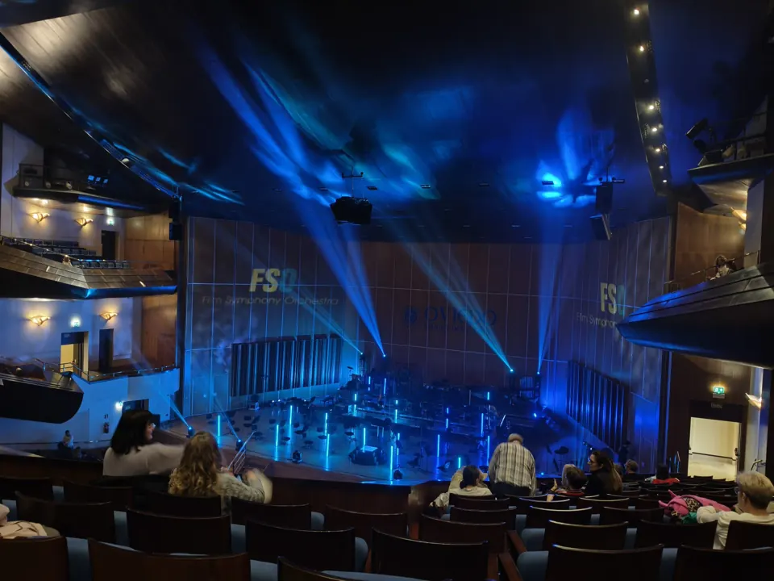
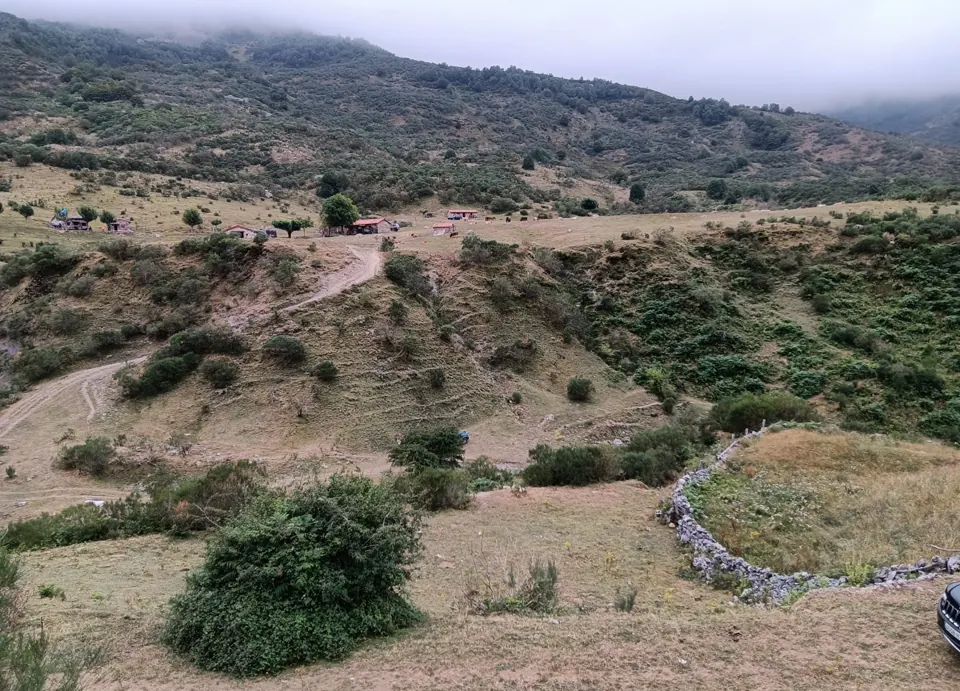
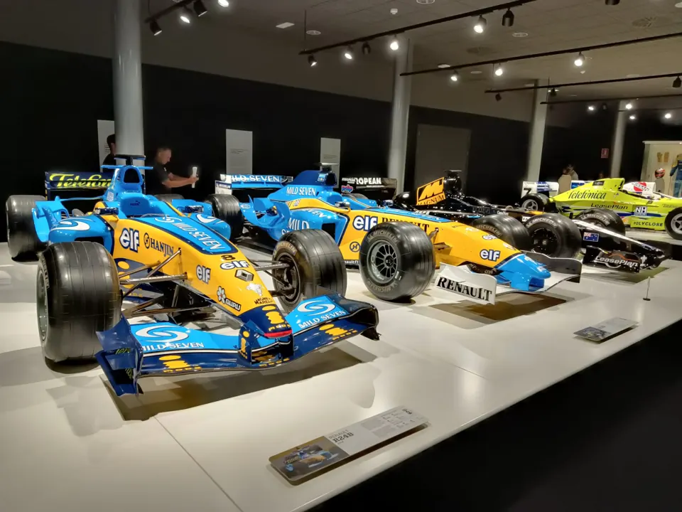

La música
Hoy en día no puedo vivir sin escuchar música. Es una parte fundamental de mi día a día. El deporte, el trabajo, el estudio, la rutina... Todo es mejor con música.

Hoy en día no puedo vivir sin escuchar música. Es una parte fundamental de mi día a día. El deporte, el trabajo, el estudio, la rutina... Todo es mejor con música.
Mi mayor motivo para viajar y la unión más estrecha con mi padre. Cada fin de semana, la excusa ideal para compartir una tarde juntos.
Una forma de entretenimiento y desafío constante. Me encanta explorar nuevos mundos y enfrentar retos emocionantes. Desde bien pequeño, pasando por varias generaciones de consolas.

Me encanta salir a disfrutar de los paisajes naturales y conectar con el entorno. La naturaleza es una fuente de inspiración y paz para mí.
Me encanta probar nuevos sabores y descubrir platos deliciosos. La comida es mi mayor placer y disfrute en la vida.

La emoción de la velocidad y la precisión de la ingeniería combinadas en un único deporte. Soy un fanático del automovilismo.